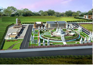
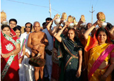
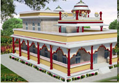

Philosophy of Peace
Namokar Tirth is not just a location; it's a movement...
"Hatred does not cease by hatred..." - Lord Buddha



Welcome to Jain Knowledge City
Welcome to the Jain Knowledge City, a serene, scholarly environment dedicated to the preservation, study, and promotion of ancient Jain philosophy and wisdom. This intellectual hub serves as a bridge between the spiritual depth of the past and the contemporary world, offering a deep dive into the principles of non-violence (Ahimsa), self-discipline, and the pursuit of truth. Designed as a sanctuary for seekers of knowledge, the city provides access to extensive scriptures, research on Jain history, and insights into the lives of Tirthankaras. Whether you are exploring the profound logic of Anekantavada or looking for insights into mindful living, Jain Knowledge City is a welcoming space for fostering intellectual growth, ethical living, and spiritual liberation.